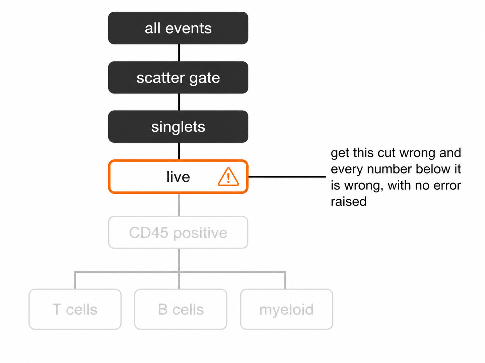
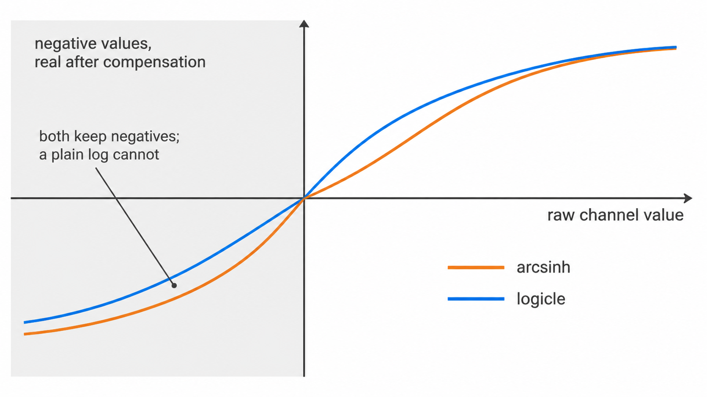
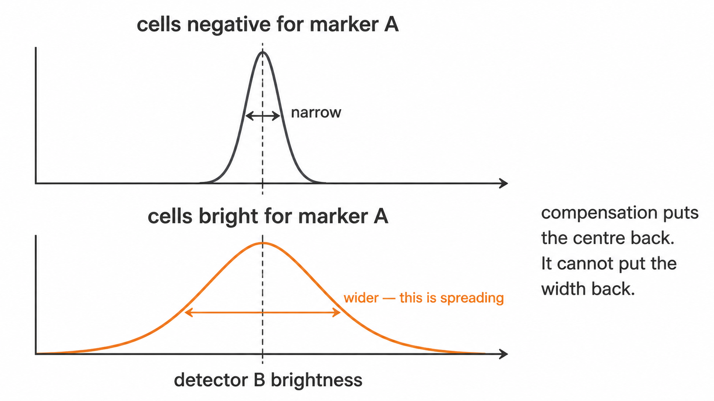

Cell identification in cyRAVEN proceeds in three stages: exclusion of non-cellular and non-viable events, placement of per-sample marker thresholds, and evaluation of a declarative population specification against those thresholds. This article documents each stage and the parameters governing it.
1. Hierarchy
Four sequential gates precede any marker evaluation. Each is derived from the data rather than transferred between samples.

1.1 Scatter. The lower forward-scatter bound is placed at the deepest minimum of the log10 FSC-A density. Sub-cellular debris forms a distinct low-scatter mode separated from intact cells; the minimum between them is the boundary.
1.2 Singlets. Coincident events traverse the
interrogation point over a longer interval than single cells, producing
a pulse whose area is inflated relative to its height. Events are
retained within median ± k·MAD of the FSC-H:FSC-A ratio
computed inside the scatter gate, with k set by
--singlet-mad-k (default 3).
1.3 Viability. Amine-reactive viability dyes penetrate only cells whose membrane integrity has been lost. Dead cells are excluded at the density minimum of the dye channel. Panels without a viability marker skip this gate, and the omission is logged.
1.4 CD45. Leukocytes are selected on CD45, which is expressed across haematopoietic lineages and absent from erythrocytes and platelets. Where CD45 is not in the panel, all viable events become the parent and a warning is issued, since percent-of-leukocytes and percent-of-viable are not interchangeable denominators.
All subsequent population frequencies are expressed as a percentage of the CD45+ parent.
2. Thresholding
2.1 Rationale
Staining index varies between samples through reagent lot, fluorochrome degradation, time between staining and acquisition, and cellular autofluorescence. A threshold transferred between samples is therefore mis-specified in both directions: conservative in dim samples, permissive in bright ones. The resulting bias is systematic and correlated with acquisition order, which is the configuration most likely to be confounded with study group.
2.2 Implementation
For each marker, within each sample, the density of cells passing the
parent gate is evaluated and the threshold placed at the minimum
separating the negative from the positive mode.
density_valley() returns NA where the
distribution is unimodal. resolve_threshold() then attempts
an unstained control if one is declared in the sample map, and falls
back to a fixed quantile otherwise.
2.3 Interpretation
thresholds_used.csv records one row per sample and
marker. Two columns determine how far a downstream frequency can be
trusted.
threshold is the value applied.
source is valley where a density minimum
was resolved and quantile_fallback where none existed. A
fallback indicates that the marker did not separate positive from
negative events in that sample. Frequencies derived from a fallback
threshold are not invalid, but they carry no evidence of separation. A
marker falling back across the majority of samples is not resolving in
that panel, and no gating strategy will recover it.
threshold_scale_qc.csv reports, per panel and marker,
the median threshold across samples and the robust z of each
deviation from it. Thresholds flagged here are the first candidates for
manual review.
2.4 Precision
source is a three-valued summary of how a threshold was
obtained. It does not say how well determined the value is, and two cuts
both recorded as valley can differ by an order of magnitude
in that respect: one sitting in a wide, empty gap between well-separated
modes, the other on a shallow dip that a slightly different histogram
would not have found.
threshold_uncertainty.csv supplies the missing quantity.
Each cut is re-derived from resamples of the events it was computed on,
giving the component that comes from having counted a finite number of
cells, and again across the settings density_valley()
takes, giving the component that comes from the choices this package
makes on the analyst’s behalf. The two combine in quadrature.
bootstrap_valley_rate is the more direct reading of the
two. A cut recovered in every resample marks a real boundary; one
recovered in half of them was found by histogram noise that happened to
clear the relative-depth rule, and a wide interval understates how
little is there.
uncertainty_budget.csv carries the consequence through
to the populations. Each marker a population reads contributes a term,
as does the CD45 parent threshold, which enters every population because
it fixes the denominator. The diagnostics
article covers how to read the result.
2.4a Reference controls
resolve_threshold() falls back to a control distribution
when no density minimum exists. Which control that is decides what the
resulting cut means.
An unstained tube, declared through is_control, shows
where autofluorescence ends. It cannot show where a marker’s background
ends in a panel, because a stained sample’s negative population sits
wider than an unstained one under spillover from every other
fluorochrome present.
A fluorescence-minus-one control is the same panel with one reagent
omitted, so its distribution in that channel is the negative population
under the spreading the real samples experience. Declare one through two
optional sample-map columns: fmo_for, naming the markers
the file controls for, and control_group, confining it to
the batch it was acquired in. The resulting source is
fmo_q995 rather than control_q995.
fmo_agreement.csv is the reason to supply one rather
than merely the means. It reports the distance between the derived cut
and its FMO-anchored equivalent in units of that threshold’s own
uncertainty. Within about one, the two agree to the precision either can
claim and the derived cut is corroborated by an independent experiment.
Beyond about three they disagree by more than either can explain: a
derived cut far above the FMO is discarding real signal, and one far
below is calling spillover positive.
2.4b Overriding one sample’s cut
A threshold flagged for review previously admitted two responses:
accept it, or pin that marker for the whole run through
thresholds:. The second corrects one tube by applying one
number to every sample, which reintroduces the fixed-coordinate bias
section 2.1 describes.
A sample_overrides: block corrects one sample and one
marker:
sample_overrides:
D07:
CCR7:
threshold: 2.15
reason: "valley sat inside the negative mode, see gating_qc.png"
set_by: "initials"The resulting source is manual, distinct
from config: the first records that a named person moved
one cut for a stated reason, the second that the assay declares this cut
everywhere. thresholds_used.csv gains
override_reason and override_by, and the run
manifest lists every override. An entry matching no sample or marker in
the cohort is reported rather than silently ignored.
2.5 Sufficiency
Precision of placement and sufficiency of counting are separate guarantees, and a population can have one without the other. A cut through a wide empty gap is well determined however few cells sit beyond it.
u_counting_pct_points in
population_frequencies.csv is what the frequency carries
from the number of events behind it, computed as the Wilson half-width
at one standard deviation. The ordinary binomial standard error is not
used because it evaluates to zero when no events were observed, which
asserts certainty about a population that was never seen.
lod_pct and loq_pct express the
conventional twenty and fifty events as percentages of that sample’s
parent gate, and detection states which side of them the
population falls. Both are properties of the acquisition rather than of
the gating strategy: a population below the limit of quantification is
not mis-gated, it is under-sampled, and no threshold placement recovers
it.
Because the denominator is the parent-gate events this run saw,
--max-events-per-file raises both limits in proportion. A
population reported below the limit of a subsample may be perfectly well
resolved in the full file.
None of this alters a threshold. The value in
thresholds_used.csv is density_valley() at its
defaults on the real events, with or without the analysis; the
perturbation runs on copies.
2.5 Stability across runs
The comparison in threshold_scale_qc.csv is against the
other samples of the same run, which identifies one deviant tube among
many sound ones. It is blind to a cohort that moved together, because
the peer median moves with it.
--write-baseline records where an accepted run placed
each threshold and how variable it was; --baseline measures
a later run against that record. This is the check that survives a laser
service, a reagent lot change or a year between acquisitions.
3. Specification
3.1 Syntax
Populations are declared in the populations: block of
the --config YAML as conjunctions of marker directions.
populations:
CD4 T cells:
CD3: above
CD4: above
CD8: below
Central memory CD4:
CD3: above
CD4: above
CD8: below
CCR7: above
CD45RA: belowAn event is assigned to a population when it satisfies every declared direction against that sample’s thresholds. The first entry above is the conventional definition of a CD4 T cell, expressed in a form the scoring stage can evaluate.
3.2 Directions
above and below denote expression and its
absence. If the terms in this section are unfamiliar, Flow cytometry for dummies
covers events, cuts, scatter and the pulse suffixes from the
beginning.
intermediate addresses markers with three resolvable
levels. CD14 in monocyte subsetting is the canonical case: classical
monocytes are CD14++, intermediate monocytes
CD14+CD16+, and non-classical monocytes
CD14dim. The upper bound of the intermediate interval is
derived from a second density minimum within the positive fraction.
Where no second minimum exists the population is reported UNAVAILABLE
rather than being merged into the bright fraction.
3.3 Construction
- Enumerate the panel.
thresholds_used.csvfrom any run lists every resolved marker; the$PnSkeyword of any file in the batch carries the same information. - Declare lineage-level populations first and confirm they score plausibly before adding subsets. An error in the CD3 gate propagates to every T cell subset beneath it.
- Pass the file with
--config. The same file optionally carries threshold overrides, colour assignments and metadata translations. - Read the run log. A population whose markers are not all present is
reported UNAVAILABLE and scored as absent. An empty frequency table
almost always indicates a nomenclature mismatch between the
specification and
$PnSrather than a biologically absent population.
system.file("config", "config_cohorts.yaml", package = "cyRAVEN")
provides the file structure; replace the populations with those of the
panel in use.
3.4 Default
The built-in specification describes a myeloid and lymphoid panel comprising CD14, CD16, CD19, CD56 with NKG2D, CD127 with CD25, and the gamma-delta T cell receptor chains. A T cell panel of CD3, CD4, CD8, CD38, HLA-DR, CCR7 and CD45RA intersects it in three populations of fifteen. It is a worked example, not a default suitable for arbitrary panels.
3.5 Markers read inside a population
A marker can be used to define a population or measured inside one.
The two are different questions, and the second is declared in
functional_blocks:.
functional_blocks:
CD33 on gated myeloid subsets:
markers: [CD33]
populations: [Granulocytes, Monocytes]
activation:
markers: [CD69, HLA-DR, CD25]
require: CD3
exhaustion:
markers: [LAG-3, TIM-3, PD-1]
exclude: [Classical monocytes, Non-classical monocytes]Each block reports its markers’ median intensity and percent positive
within the populations it is scoped to, and
functional_markers_stats.csv tests them between groups
exactly as abundance is tested. Scope is resolved in one of three ways,
in this order of precedence: an explicit populations: list;
require:, a marker whose direction must be
above in a population’s definition for that population to
be included; or exclude:, a list omitted from an otherwise
complete set. Expressing scope as a rule means adding a population to
populations: scores it under the right blocks with no
further edit.
population_marker_mfi.csv already reports every marker
in every population. The point of a block is the scoping, and it has one
requirement that matters: a marker must not be read inside a gate its
own threshold helped draw. Testing CD15 within a CD15-positive
population returns 100 percent in every sample, so the result has zero
variance and an undefined p-value, and it measures the definition rather
than the biology. Declaring functional_blocks: in the
config replaces the built-in blocks entirely rather than adding to them;
see ?default_functional_blocks for what those are.
3.6 Ratios between populations
ratios:
gran_lymph:
label: "Granulocyte:lymphocyte ratio"
numerator: Granulocytes
denominator: LymphocytesA ratio of two declared populations is written to
population_ratios.csv and tested with the same statistics
as any abundance. It is declared rather than computed after the fact
because when both populations are percentages of the same parent, the
ratio is not recoverable from either frequency on its own once the
parent has changed between samples.
There is no default. A ratio hard-coded to population names that a given panel does not contain would be silently meaningless, so the block is opt-in.
3.7 Provenance
The specification is not estimated from the data. A specification fitted to the samples against which it is subsequently tested cannot be falsified by them, and falsification is the function of the threshold drift, phenotype concordance and gate-cluster concordance outputs.
Data-driven proposal is available and kept separate.
--explain-clusters derives two-marker gate geometry for any
cluster the specification does not describe, with performance measured
on held-out cells, and writes it to
cluster_gate_proposals.csv. Promotion of a proposal to a
named population is a manual decision, and the following run reads an
edited specification.
4. Transformation
4.1 Scale

Fluorescence intensities span four to five decades. Untransformed, the negative population compresses against the axis and mode separation is not resolvable. Every threshold in section 2 is therefore placed on a transformed scale, and the choice of transform determines where it lands.
4.2 Arcsinh
The default. The cofactor governs the width of the quasi-linear
region near zero and is estimated per panel by bisection until the
interquartile range of the background distribution reaches a target. The
conventional value of 5 derives from mass cytometry and over-expands the
background band on spectrally unmixed fluorescence data, so it is
estimated rather than assumed. derive_cofactor_pooled()
estimates across samples so that a single weakly stained file does not
set the scale for the batch.
4.3 Logicle
--transform logicle implements the automatic logicle
rule with linearisation width w = (m -
log10(t/|r|))/2, where r is the
fifth percentile of the negative population. The quasi-linear region
near zero accommodates compensated negative values, which arcsinh cannot
represent.
Parameters are pooled across the panel. Per-file fitting, implemented by some tools, assigns each sample an independent scale and invalidates cross-sample comparison of medians.
4.4 Consequence
The transform is not a display parameter. On a seven-colour T cell panel, lineage-level populations agreed within 0.1% between transforms while CCR7 and CD45RA memory subsets differed by tens of percent.
The mechanism is recorded in thresholds_used.csv. Under
arcsinh the CCR7 threshold resolved to a density minimum in some samples
and to a quantile fallback in others, a difference of approximately 2.5
units on that scale. Under logicle a minimum was resolved in every
sample. For dim markers without clear bimodality the transform
determines whether a stable threshold exists at all, which makes the
source column a prerequisite for interpreting any memory
subset frequency.
--transform none bypasses transformation for
pre-transformed input.
5. Compensation
Fluorochrome emission spectra overlap, so signal from one dye is registered in detectors assigned to others. Uncorrected, this produces apparent positivity in channels the cell does not express.

The spillover matrix is determined at acquisition from single-stain
controls and stored in the FCS keyword block. cyRAVEN applies it where
present and reports its absence. Spectral instruments write unmixed data
with no matrix, so maybe_compensate() detects rather than
assumes, since applying compensation twice is as damaging as omitting
it.
Matrix construction is out of scope. It belongs in acquisition software, where the single-stain controls can be inspected.
5.1 What compensation cannot undo
Subtracting a fluorochrome’s expected contribution to another
detector is correct on average. What the subtraction cannot remove is
the photon-counting variance that came with the contribution, so a
channel receiving spillover from a bright neighbour has a negative
population that is correctly centred and abnormally wide. Two modes that
were separable merge, the valley fills in, and section 2.3 reports
quantile_fallback with no indication of why.
spreading_receivers.csv supplies the cause. For each
ordered channel pair, the spread of the receiver’s negative population
is compared between cells negative and positive for the source;
restricting to the receiver’s own negatives is what makes this spreading
rather than biology, since co-expression moves the positive cells and
not the width of the negatives. spreading_pairs.csv holds
the full pairwise ranking.
The finding to act on is the join between the two: a marker that both falls back to a quantile in most samples and receives substantial spreading is reported as a panel design problem. No gating strategy recovers a cut that spreading has erased.
This is a ranking computed from the samples in hand, not a spillover spreading matrix. The published SSM is derived from single-stain controls, which this package is not given, and the values here are not comparable with it.